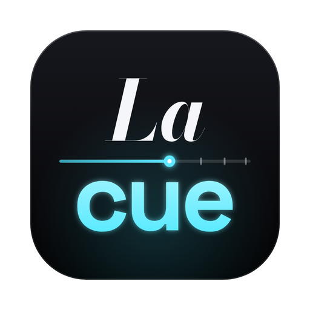

Drop anything, anywhere.
Audio, video and images straight into the list — even between two cues. Drag to reorder, drop to place.
Ready to Cue
House lights down.
Prologue
Italian for “let’s give the A” — the note that starts everything.
In an orchestra the A comes first. Everyone tunes to it, then the show can begin. In the booth it’s the same: someone has to give the cue.
La Cue is the cue player for whoever is on the button. Drag in your files, shape them on the waveform, press GO. It takes care of the rest.
Act I · Opening night
The audience settles. Cue 1 is on standby.
Act II · The sound
Act III · The mix New
Act IV · The booth
Nothing you don’t. Every control is where you expect it — in the dark, on opening night.
keep scrolling →Audio, video and images straight into the list — even between two cues. Drag to reorder, drop to place.
Click, ⌘-click, ⇧-click, ⌘A. Change a fade, a curve or a level once — it applies to every selected cue. Copy and paste them all.
Each cue decides what to do with the ones above it when it fires: stop, stop all, fade or fade all — with its own fade time.
Linear, S-curve, fast or slow start. Constant power is the default: same perceived loudness all the way through.
Chain cues with waits and automatic starts. Auto-follow crossfades into the next one. Complex sequences, one GO.
Video cues show a filmstrip above the audio waveform. Fades work on picture and sound; audio is normalized too.
F fades everything with your global fade time. Stop All can fade too — press it twice and everything stops. Instantly.
Pick the audio device in Settings — Dante Virtual Soundcard, your interface, or simply follow the Mac.
Automatic numbering, or type your own: 12, 12A, 12B. The way your stage manager calls them.
The .lacue file and its Media folder travel together, with relative paths. Auto-saved. Double-click and you’re on.
Act V · Eyes on stage
Every action is one key away. Try them — press them now.
In Edit mode, Space auditions the selected cue — without touching the live show.
When you’re ready…

The cue player for whoever is on the button.
For theatre, events and schools, on Mac.
Version 1.0 · macOS 13 Ventura or later · Apple Silicon